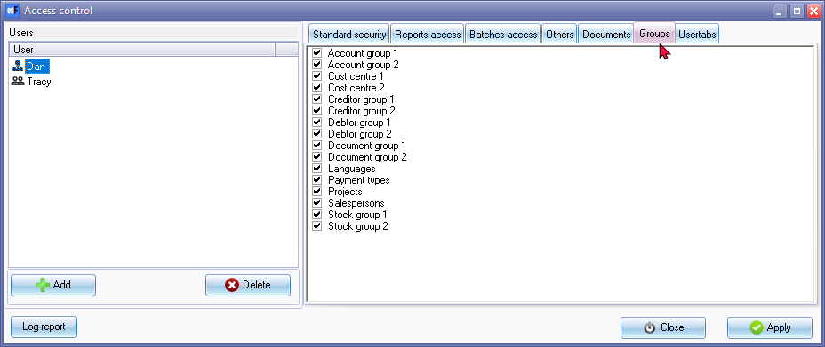

Access control - Groups tab
The Groups tab on Access control allows you to restrict access or allow access to specific users for the Groups to be available when accessing the Setup → Groups menu on the Setup ribbon.
By default all reporting groups such as Account group 1, Account group 2, Debtor group 1, Debtor group 2, Creditor group 1, Creditor group 2, Document group 1, Document group 2, Stock group 1, Stock group 2, Cost centre 1, Cost centre 2, Projects, Salespersons, Languages and Payment types will be available.
If you restrict a user from access to a specific groups, the users will not be able to view and add, edit, delete or disable items on these groups.
However users which is restricted to specific groups, which they cannot view and edit will still have the options and functionality to select restricted groups when printing reports and select groups when creating, editing accounts, debtors, creditors, documents and stock items.
To set groups access options for an user:
- On the Setup ribbon, click on the Setup → Access control menu. Then, navigate to the Groups tab.

- Selecting the user: Ensure that the correct user is selected for whom you want to restrict or allow access to batches, accounts, and processing options. If needed, click on the User icon to select the desired user.
- Managing groups access: By default, all reporting groups such as Account group 1, Account group 2, Debtor group 1, Debtor group 2, Creditor group 1, Creditor group 2, Document group 1, Document group 2, Stock group 1, Stock group 2, Cost centre 1, Cost centre 2, Projects, Salespersons, Languages and Payment types are available for all users.
- Restricting groups access: To restrict a user from accessing specific groups, remove the tick (deselect) from the respective group. This means that the user will not be able to view, add, edit, delete, or disable items within those restricted groups.
|
|
You can use the Spacebar on your keyboard to select or deselect an option. |

- Applying changes: Click on the Apply button to save the changes for the selected user.
- Setting access levels for other users: If necessary, select the next available user and configure their groups access and restrictions in the same manner.
- Finalizing changes: Once you have finished setting the access levels for all desired users, click on the Close button to exit the "Access control" screen.
By customizing the access to groups, you can control the level of permissions and data visibility for different users in osFinancials. Users with restricted access to specific groups will not be able to perform any actions related to those groups, ensuring that they only have access to the necessary data and functionality within the application.
Access to selecting groups for reports
In osFinancials, when you restrict a user from accessing specific groups using the Groups tab in the Access control feature, it means that the user will not be able to view, add, edit, delete, or disable items within those restricted groups. However, they will still be able to select the reporting groups on report options screens when printing reports.
By allowing users to select reporting groups on report parameter screens, they can filter and customize the reports based on their reporting needs, even if they don't have access to perform actions within the restricted groups. This provides flexibility in generating reports while maintaining the necessary restrictions on data manipulation and management within osFinancials.
Access to selecting groups for documents
In osFinancials, if users are restricted to specific Document groups using the Access control feature, they will still be able to filter and search for specific documents within the restricted groups. However, it's important to note that this functionality is subject to the document type permissions set in the Batches access tab of the Setup → Access control menu.
If a user is restricted from accessing or processing certain document types (such as Invoices, Credit Notes, Purchases, or Supplier Returns) in the Batches access tab, they will not be able to filter or search for documents of those restricted document types, even within the restricted Document groups. The document type restrictions in the Batches access tab take precedence over the Document group restrictions.
By carefully managing both Document group access and document type permissions, you can effectively control user access to specific documents and document types in osFinancials, ensuring users can only work with the documents relevant to their assigned permissions.
Access to selecting groups in various functions
In osFinancials, if users are restricted to specific Account groups, Debtor groups, Creditors groups, or Stock items groups using the Access control feature, they will still have certain capabilities within those restricted groups. Here's how it works for each scenario:
- Account groups: Users with restricted access to specific Account groups will still be able to select and change the existing account groups when creating or editing ledger accounts (Setup → Accounts menu).
- Debtor groups: Users with restricted access to specific Debtor groups will still be able to select and change the existing debtor groups when creating or editing debtor accounts. This means they can assign debtors to the available groups. Additionally, they can filter and search for specific debtors within the restricted groups on the Debtors grid.
- Creditor groups: Similar to debtor groups, users with restricted access to specific Creditors groups will be able to select and change the existing creditor groups when creating or editing creditor accounts. They can assign creditors to the available groups. They can also filter and search for specific creditors within the restricted groups on the Creditors grid.
- Stock groups: Users with restricted access to specific Stock items groups will retain the ability to select and modify the existing stock item groups when creating or editing stock items. They can assign stock items to the restricted groups. Additionally, they can filter and search for specific stock items within the restricted groups on the Stock items grid.
By allowing these capabilities within the restricted groups, users can still manage and organize debtor accounts, creditor accounts, and stock items effectively, even with limited access to specific groups. This ensures that users can work with the relevant data while maintaining the necessary access controls in osFinancials.